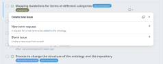

The text is mainly written for researchers to guide them in adding a new term to PaNET.
Blue texts are additional information for the PaNET maintenance group and can be ignored. A new term can be a technique, a specifier, and/or a relationship.
Decide what kind of term you want to add:
Create a meaningful title, e.g. "New term: X-ray Absorption Spectroscopy".
Assign a fitting name to the term. If multiple options are suitable, choose a full-text representation, you can designate abbreviations and additional names as synonyms later on.
Use a self-explanatory, short description. Please avoid explaining a term with itself.
The position in the ontology is described by the type of the relationship (axiom type) and a related term that already exists in the ontology.
Possible axiom types for techniques and specifiers
Check if more general (parent class) or more specific (child class) techniques already exist, e.g. "diffraction" is a more general term for "powder diffraction". Add those with the strongest relations as super- and subclasses. Please give their PaNET IDs.
Check if the use specifiers is beneficial, e.g. "scanning probe" as an additional descriptor to "transmission x-ray microscopy". These terms are usually (direct) subclasses of
For Maintainers: Possible axiom types for relationships (object properties)
Please create a sub-issue to add the missing specifier or term, using the same template to make a "New term request".
Example:
Synonyms can be abbreviations.
Add a cross-reference to a reliable (as persistent as possible) source, e.g. link to Wikidata.
Add DOIs of 1 or 2 peer-reviewed journal articles using the technique.
Add a brief motivation on why this technique should be added, e.g. technique used at your facility, with a link to a website that proves this.
The ID for a new term depends on its type: technique, specifier, or relationship.
| Type | Min. ID | Max. ID |
|---|---|---|
| Techniques | 0 | 999999 |
| "defined by ..." terms | 2 | 99 |
| "defined by experimental probe" terms | 100 | 199 |
| "defined by experimental physical process" termss | 200 | 299 |
| "defined by functional dependence" terms | 300 | 399 |
| "defined by purpose" terms | 400 | 499 |
| Other, more specific terms | 1000 | 999999 |
| Relationships | 1000000 | 1999999 |
| Specifier | 2000000 |
When a new "defined by..." term is created, it will receive an ID i in the range 2 to 99. Its subclasses will cover the ID range (i-1)*100 to i*100-1.
Example: "defined by functional dependence" (PaNET00004) with subclasses in PaNET00300 to PaNET00399.
dcterms_prefix=${DCTERMS_PREFIX:-terms}
robot \
template \
--template "PaNET.csv" \
--prefix "PaNET: http://purl.org/pan-science/PaNET/" \
reason --reasoner hermit \
--remove-redundant-subclass-axioms false \
--include-indirect false \
--exclude-tautologies all \
--axiom-generators "$generated_axioms" \
annotate \
--ontology-iri "http://purl.org/pan-science/PaNET/PaNET.owl" \
--add-prefix "sdo: http://schema.org/" \
--add-prefix "${dcterms_prefix}: http://purl.org/dc/terms/" \
--output "PaNET.owl" \
reason \
--reasoner hermit \
--remove-redundant-subclass-axioms false \
--include-indirect true \
--exclude-tautologies all \
--axiom-generators "$generated_axioms" \
--output "PaNET with inferred axioms.owl"
robot diff --left "PaNET_reference.owl" --right "PaNET_new.owl" --output compare.txt